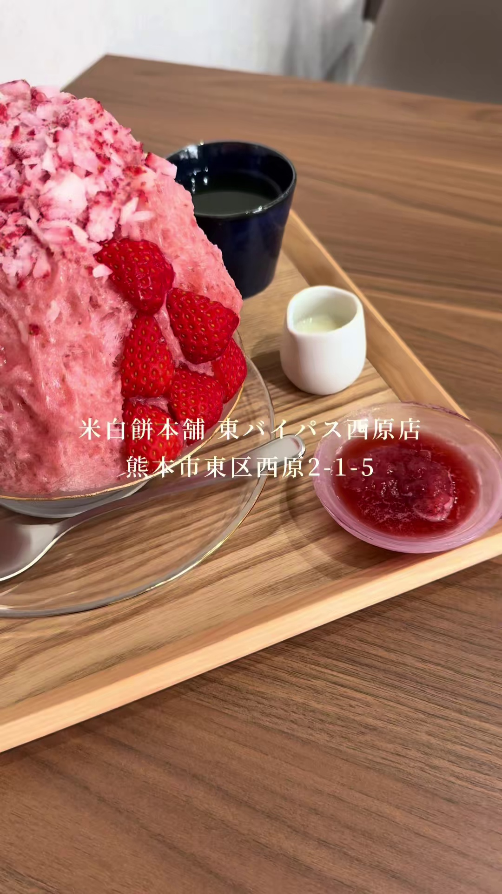

米白餅本舗 東バイパス西原店
餅、和菓子、赤飯などを扱う老舗の餅屋。かき氷は東バイパス西原店でのみ提供。
基本情報:
- 住所: 熊本県熊本市東区西原2-1-5
- 電話番号: 096-285-7635
- 営業時間: 10:00～19:00
- 定休日: 火曜日（祝日は変更の場合あり）
- 駐車場: あり
ギャラリー


米白餅本舗 東バイパス西原店
餅、和菓子、赤飯などを扱う老舗の餅屋。かき氷は東バイパス西原店でのみ提供。
基本情報: